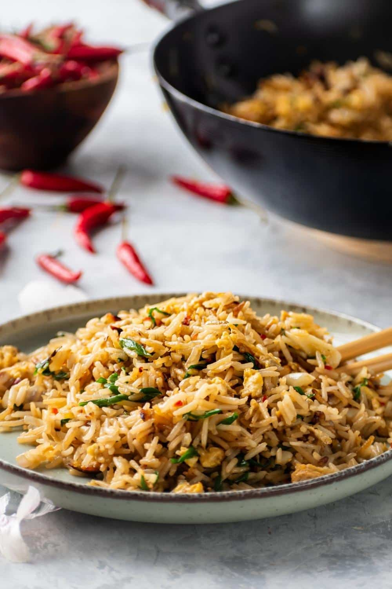

Uncle Roger's Egg Fried Rice Recipe

Description
This is Uncle Roger's egg fried rice recipe which yields 4 servings of egg fried rice. No vegetables because he says, "vegetables taste like sad." 😔
Ingredients
- At least 5 garlic cloves
- 1 shallot
- 1 full egg and 1 egg yolk
- 1 spring onion
- 1 red chili
- 4 cups "chicken rice" (rice cooked with chicken stock, ginger, and garlic left overnight)
- About 2 tbsp. Kikkoman Soy Sauce
- About 2 tbsp. Aster Pure 100% Sesame Oil
- About 1/2 tbsp. MSG Sasa (Monosodium Glutamate; Indonesian brand)
- 2 tbsp. peanut oil (substitutes: pork lard or vegetable oil)
- Optional: white pepper
Prep-work
- Prepare the chicken rice the day before you want to make egg fried rice, leave it overnight in the fridge: rice made from chicken stock, ginger, and garlic.
- Have all of your ingredients ready (mise en place).
- Smash or chop the garlic cloves finely.
- Make some vertical cuts on the shallot and then slice the shallot from the middle. Chop finely.
- Whisk the egg with chopsticks.
- Chop the spring onion, chop away the excess and save it for other cooking.
Steps
- First, coat the wok with oil. Once the oil starts smoking, throw away the excess oil.
- Spread the oil nicely around the wok and then add the garlic and shallot.
- Fry the garlic and shallot for a bit until it's fragrant.
- Next, add the egg and stir it around.
- Fry the egg, when the egg is almost all solid and fluffy, add in the rice. Stir.
- Add in two swirls of oil around the wok.
- Add in your soy sauce, coat the rice.
- Add in your sesame oil, flatten the rice to avoid clumping. Stir.
- Sprinkle in your MSG over the rice.
- Add in your garnishes, the spring onion and chili.
- Stir everything around and toss the wok.
- Serve on a plate.
Back to Recipes Homepage
Back to Top